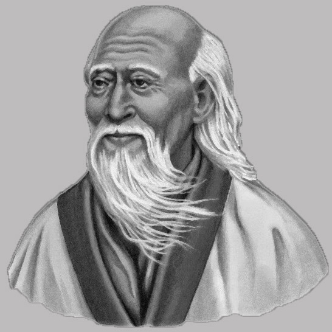
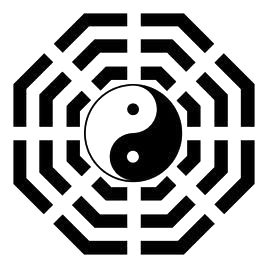

Lao Tzu, also rendered as Laozi and Lao-Tze,was an ancient Chinese philosopher and writer. He is the reputed author of the Tao Te Ching, the founder of philosophical Taoism, and a deity in religious Taoism and traditional Chinese religions.
A semi-legendary figure, Lao Tzu was usually portrayed as a 6th-century BC contemporary of Confucius, but some modern historians consider him to have lived during the Warring States period of the 4th century BC. A central figure in Chinese culture, Laozi is claimed by both the emperors of the Tang dynasty and modern people of the Li surname as a founder of their lineage. Laozi's work has been embraced by both various anti-authoritarian movements and Chinese Legalism.

老子
